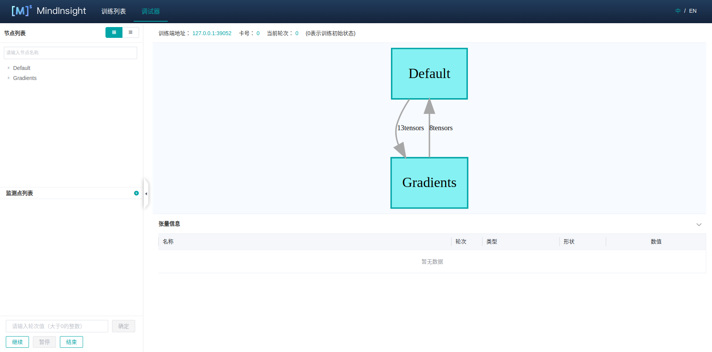
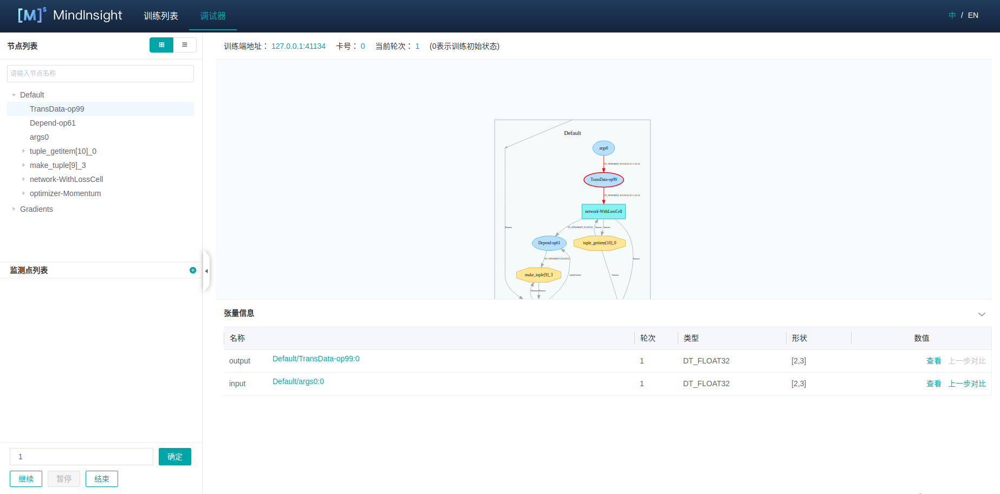
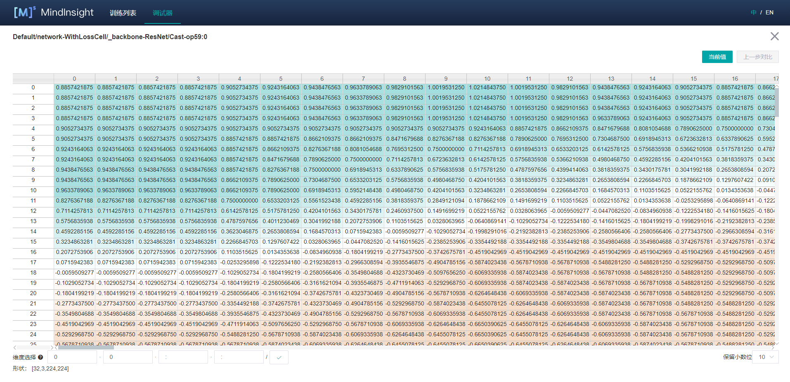
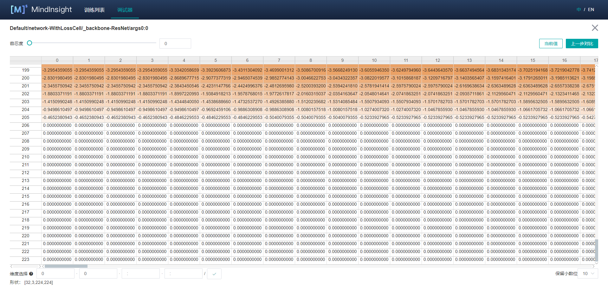
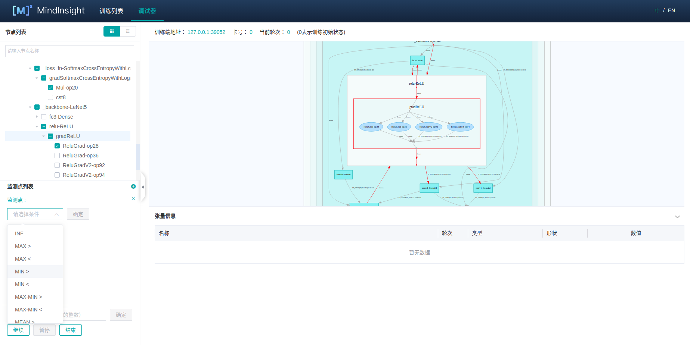
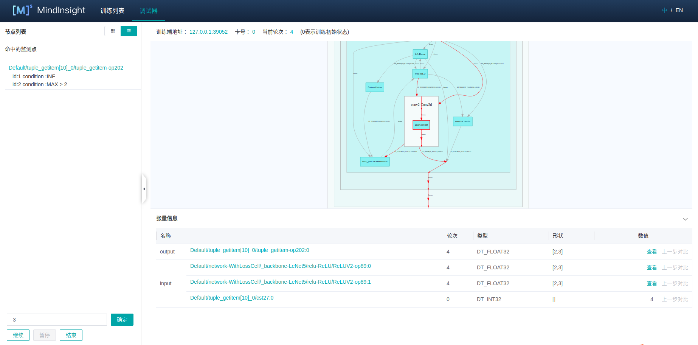
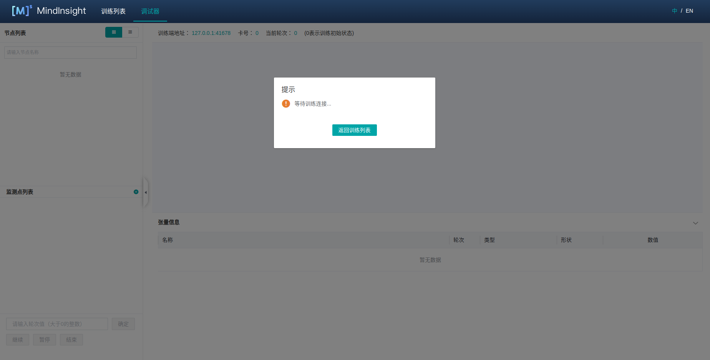

使用调试器
Linux Ascend GPU 静态图 模型调试 中级 高级

概述
MindSpore调试器是为图模式训练提供的调试工具，可以用来查看并分析计算图节点的中间结果。
在MindSpore图模式的训练过程中，用户无法从Python层获取到计算图中间节点的结果，使得训练调试变得很困难。使用MindSpore调试器，用户可以：
在MindInsight调试器界面结合计算图，查看图节点的输出结果；
设置条件断点，监测训练异常情况（比如INF），在异常发生时追踪错误原因；
查看权重等参数的变化情况。
操作流程
以调试模式启动MindInsight，配置相关环境变量;
训练开始，在MindInsight调试器界面设置条件断点；
在MindInsight调试器界面分析训练执行情况。
调试器环境准备
开始训练前，请先安装MindInsight，并以调试模式启动。调试模式下，MindSpore会将训练信息发送给MindInsight调试服务，用户可在MindInsight调试器界面进行查看和分析。
MindInsight调试服务启动命令：
mindinsight start --port {PORT} --enable-debugger True --debugger-port {DEBUGGER_PORT}
参数含义如下:
参数名 |
属性 |
功能描述 |
参数类型 |
默认值 |
取值范围 |
|---|---|---|---|---|---|
|
可选 |
指定Web可视化服务端口。 |
Integer |
8080 |
1~65535 |
|
必选 |
取值为True, 开启MindInsight侧调试器 |
Boolean |
False |
True/False |
|
可选 |
指定调试服务端口。 |
Integer |
50051 |
1~65535 |
更多启动参数请参考MindInsight相关命令。
然后，设置环境变量export ENABLE_MS_DEBUGGER=1，将训练指定为调试模式，并设置训练要连接的调试服务和端口:
export MS_DEBUGGER_HOST=127.0.0.1(该服务地址需与MindInsight host一致);
export MS_DEBUGGER_PORT=50051(该端口需与MindInsight debugger-port一致)。
如果用户设备的内存空间有限，可在运行训练前开启内存复用模式，以降低运行内存占用：export MS_DEBUGGER_PARTIAL_MEM=1。
此外，训练时不要使用数据下沉模式（需设置model.train中的dataset_sink_mode为False），以保证调试器可以获取每个step的训练信息。
调试器页面介绍
调试器环境准备完成后，开始训练。在训练正式执行前，可以在MindInsight调试器界面查看计算图等训练元信息，调试器页面布局由如下部分组成。

图1： 调试器初始页面
计算图
调试器将优化后的最终执行图展示在UI的中上位置，用户可以双击打开图上的方框 (代表一个scope) 将计算图进一步展开，查看scope中的节点信息。
面板的最上方展示了训练端地址（训练脚本所在进程的地址和端口），训练使用的卡号, 训练的当前轮次等元信息。
在GPU环境下，训练执行图面板的右上角会有当前节点和下一个节点两个按钮，分别用于回到当前执行节点、和执行下一个节点。
用户可以方便地执行单个节点。
节点列表
如图1所示，在UI的左侧会展示计算图节点列表，可以将计算图中的节点按scope分层展开。点击节点列表中的节点，计算图也会联动展开到选中节点的位置。
用户也可以使用节点列表上方的搜索框按名称进行节点的搜索。
节点信息

图2： 计算图节点信息查看
点击计算图上的节点后，可以在UI下方查看该节点的详细信息，如图2所示。该部分展示了节点的输出和输入，训练的轮次数目，张量的类型、形状和数值等信息。
在GPU环境下，选中图上的某个可执行节点后，单击鼠标右键，可选择运行到该节点，代表将训练脚本运行到被选中节点（不超过一个轮次）。选中后单击鼠标左键，训练脚本运行到该节点后会暂停。

图3： 查看张量值
一些张量的维度过多，无法直接在主页进行展示。用户可以点击对应的查看按钮，在弹出的TAB页中查看张量值的详细信息，如图3所示。

图4：查看上一步对比结果
此外，参数类型的节点输出可以和其自身在上一轮次的输出结果进行对比，点击上一步对比按钮即可进入到对比界面，如图4所示。
条件断点

图5： 条件断点设置
为了方便地对节点的计算结果进行监测分析，用户可以给计算图中的节点设置条件断点。图5展示了条件断点的设置方法，用户首先点击监测点列表右上角的 + 按钮新增条件断点并监控条件，比如INF，
然后在节点列表选择要监控的节点（勾选节点前的方框）。训练时，调试器会对这些监控节点的输出进行实时分析，一旦监控条件触发，训练暂停，用户可在UI上查看触发的条件断点信息。

图6： 查看触发的条件断点
图6展示了条件断点触发后的展示页面，该页面和节点列表所在位置相同。触发的节点以及监控条件会按照节点的执行序排列，用户点击某一行，会在计算图中跳转到对应节点，可以进一步查看节点信息分析INF等异常结果出现的原因。
训练控制
监测点设置面板的下方是训练控制面板，该面板展示了调试器的训练控制功能，有继续、暂停、结束、确定四个按钮。
确定代表训练向前执行若干个轮次，需要用户在上方的输入框内指定执行的轮次数目，直到条件断点触发、或轮次执行完毕后暂停；继续代表训练一直执行，直到条件断点触发后暂停、或运行至训练结束；暂停代表训练暂停；结束代表终止训练。
使用调试器进行调试
在调试器环境准备完成后，打开调试器界面，如下图所示：

图7： 调试器等待训练连接
此时，调试器处于等待训练启动和连接的状态。
运行训练脚本，稍后可以看到计算图显示在调试器界面，见图1。
设置条件断点，见图5。
图5中，选中检测条件，并勾选了部分节点，代表监控这些节点在计算过程是否存在满足监控条件的输出。 设置完条件断点后，可以在控制面板选择设置轮次点击
确定或者继续继续训练。条件断点触发，见图6。
条件断点触发后，用户查看对应的节点信息，找出异常原因后修改脚本，解掉bug。
注意事项
使用调试器时，会对训练性能产生一定影响。
一个调试服务目前只能够连接一个训练进程。
调试器暂不支持分布式训练场景。
调试器暂不支持多图场景。
设置的监测点数目过多时，可能会出现系统内存不足（Out-of-Memory）的异常。
在D芯片环境下，调试器暂时无法获取神经网络的初始化参数。
在GPU场景下，只有满足条件的参数节点可以与自身的上一步结果作对比：使用
下一个节点执行过的节点、使用运行到该节点时选中的节点、作为监测点输入的参数节点。其他情况均无法使用上一步对比功能。